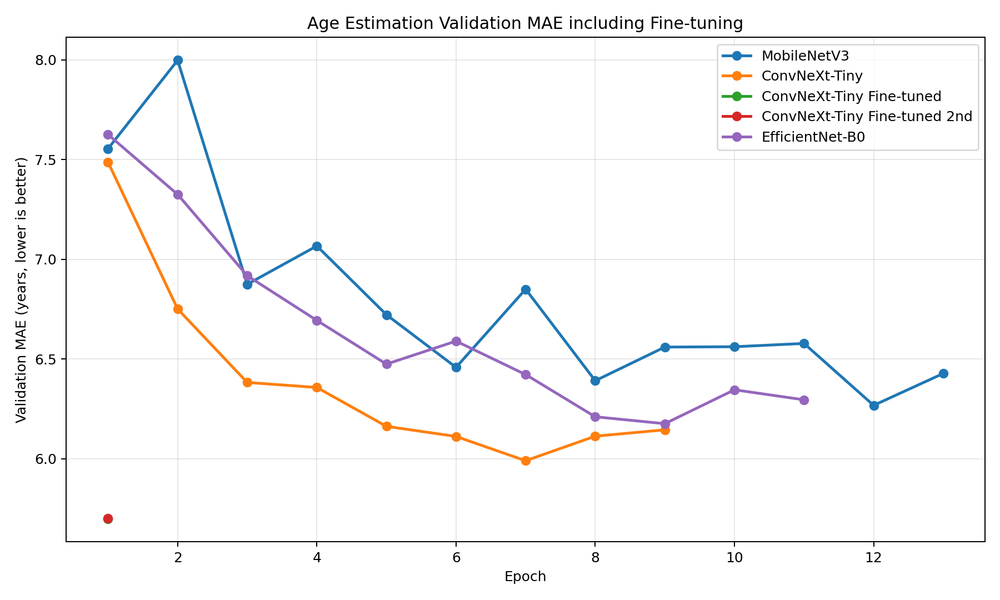
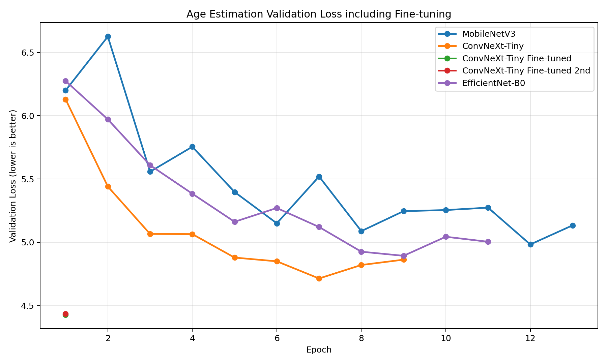
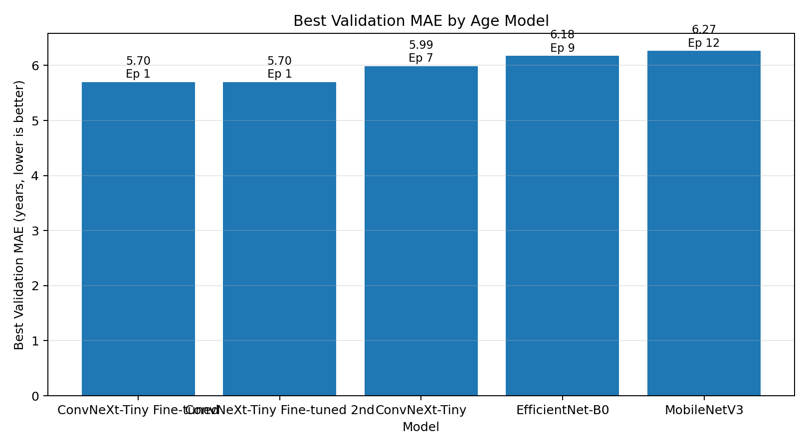
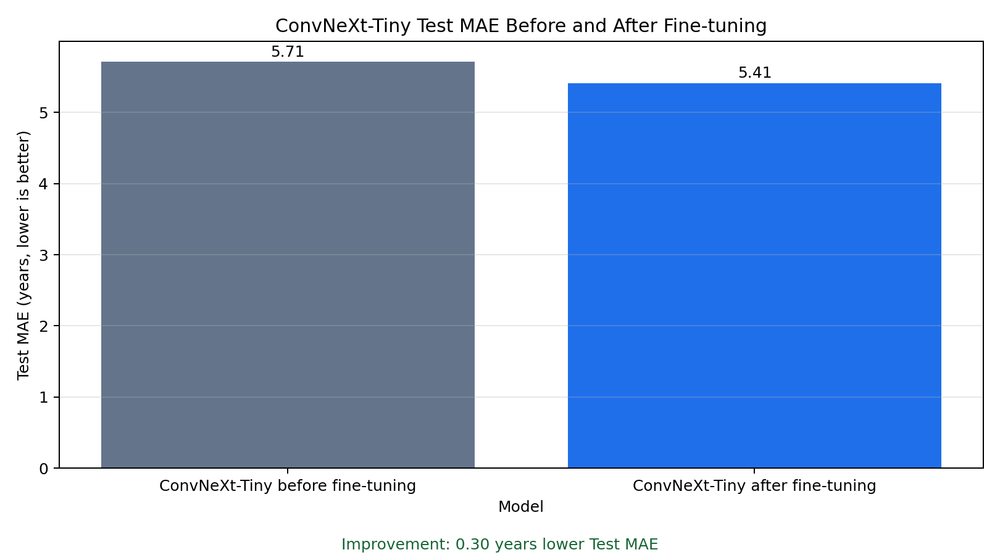
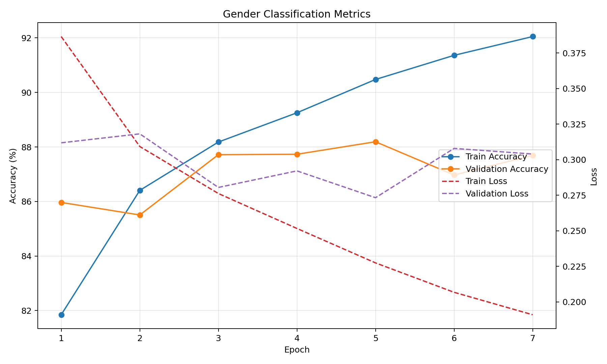

UTKFace
유티케이페이스
파일명에 나이, 성별, 인종 정보가 들어 있는 공개 얼굴 데이터셋입니다.
- 프로젝트에서 나이 예측 학습 데이터로 사용
- 전체 24,106장 중 정상 파싱 24,102장
- 인종/조명/품질 편차가 있어 실제 웹캠 입력과 차이가 날 수 있음
| 기능 | 모델 | 한국어 발음 | 현재 판단 |
|---|---|---|---|
| 현재 나이 예측 | ConvNeXt-Tiny Fine-tuned | 컨브넥스트 타이니 파인튜닝 | Test MAE 5.4106세로 재학습 전보다 개선됨 |
| 성별 분류 | MobileNetV3-Small | 모바일넷 브이쓰리 스몰 | 가볍고 빠르며 MVP 성별 분류에 적합 |
| 미래 얼굴 시뮬레이션 | SAM | 샘 | 로컬 생성은 성공했으나 한국인 정체성 유지 한계 안내 필요 |
학습 데이터 준비와 모델 입력을 만들 때 나온 용어입니다.
파일명에 나이, 성별, 인종 정보가 들어 있는 공개 얼굴 데이터셋입니다.
한국인 얼굴 기반의 에이징 이미지 데이터입니다.
이미지 경로, 나이, 성별, 데이터셋 출처 같은 학습 정보를 표로 정리한 파일입니다.
데이터를 학습용, 검증용, 최종 평가용으로 나누는 작업입니다.
같은 사람이 Train과 Test에 동시에 들어가 모델 성능이 실제보다 좋아 보이는 문제입니다.
이미지와 라벨을 읽어 모델 학습용 batch로 만들어주는 PyTorch 구성요소입니다.
사진에서 얼굴 영역만 자르고 눈, 코, 입 위치를 기준으로 얼굴을 정렬하는 전처리입니다.
눈, 코, 입, 턱선 등 얼굴의 68개 기준점을 찾는 도구입니다.
전체 학습 데이터를 모델이 한 번 모두 본 단위입니다.
한 번에 GPU로 넣는 이미지 개수입니다.
모델이 한 번 업데이트될 때 얼마나 크게 움직일지 정하는 값입니다.
검증 성능이 더 좋아지지 않으면 학습을 일찍 멈추는 방식입니다.
이미 대규모 데이터로 학습된 모델을 가져와 우리 데이터에 맞게 다시 학습하는 방식입니다.
이미 좋은 성능을 낸 ConvNeXt-Tiny 모델을 크게 흔들지 않도록 낮은 학습률로 조금 더 다듬은 추가 학습입니다.
학습된 모델 가중치를 저장한 파일입니다.
NVIDIA GPU를 이용해 딥러닝 학습과 추론을 빠르게 수행하는 환경입니다.
Automatic Mixed Precision의 약자로, 일부 연산을 낮은 정밀도로 처리해 속도와 메모리를 절약하는 기법입니다.
순서대로 자동 실행되는 작업 묶음입니다.
모델을 만들거나 개선할 때 자주 헷갈리는 세 가지 용어입니다.
모델이 학습 중 얼마나 틀렸는지를 수학적으로 계산한 값입니다.
Mean Absolute Error, 즉 평균 절대 오차입니다.
Root Mean Squared Error, 큰 오차에 더 민감한 지표입니다.
성별 분류처럼 정답이 있는 분류 문제에서 맞힌 비율입니다.
모델이 학습 데이터는 잘 맞추지만 새로운 사진에는 약해지는 현상입니다.
모델 예측값이 특정 나이대에서 치우칠 때 결과를 후처리로 조정하는 방법입니다.
Residual Network 18. 안정적이고 비교적 가벼운 CNN 모델입니다.
모바일/배포 환경을 고려한 가벼운 CNN 모델입니다.
CNN을 현대적으로 개선한 모델로, 현재 프로젝트 나이 예측의 최종 베이스 모델입니다.
기존 ConvNeXt-Tiny best 모델을 낮은 학습률로 추가 튜닝한 최종 나이 예측 모델입니다.
정확도와 효율의 균형을 맞춘 CNN 모델입니다.
성별 분류를 위해 학습한 경량 모델입니다. 성별 분류는 나이 예측보다 단순한 이진 분류라 가벼운 모델이 적합합니다.
Style-based Age Manipulation. 입력 얼굴을 target age 조건에 맞춰 변환하는 얼굴 에이징 모델입니다.
SAM 내부에서 얼굴 이미지를 생성하고 조작하는 기반 개념입니다.
Flickr-Faces-HQ. 고품질 얼굴 이미지 데이터셋입니다.
Lifespan Age Transformation Synthesis. 얼굴 사진을 여러 나이대로 변환하는 후보 모델이었습니다.
Custom Structure Preservation in Face Aging. 얼굴 구조 보존을 강조하는 face aging 연구 모델입니다.
생성형 AI가 아니라 이미지에 주름, 잡티, 채도 감소 등을 직접 적용하는 방식입니다.
Python으로 빠르게 웹앱을 만들 수 있는 프레임워크입니다.
사용자가 웹캠으로 촬영하거나 파일을 올려 분석을 시작하는 단계입니다.
학습된 모델을 사용해 새 이미지의 나이, 성별, 미래 얼굴 결과를 계산하는 단계입니다.
로컬에서 만든 웹앱을 다른 사람이 접속할 수 있는 서버에 올리는 작업입니다.
프로젝트에 필요한 Python 패키지를 독립적으로 관리하는 방식입니다.
외부 유료 API 없이 PC 또는 배포 서버에서 직접 모델을 실행하는 방식입니다.
아래 그래프들은 실제 학습 로그 CSV를 기반으로 생성한 시각화 자료입니다.





Epoch가 진행될수록 검증 데이터에서 평균 나이 오차가 어떻게 변하는지 보여줍니다.
재학습 전후 모델을 최종 Test 데이터로 비교한 그래프입니다.
검증 데이터에서 손실 함수 값이 어떻게 변하는지 보여줍니다.
성별 분류 모델의 Accuracy와 Loss를 함께 보여줍니다.
정확한 나이 추정을 위해 아래 조건에 맞춰 촬영해주세요.
본 결과는 실제 미래 모습 예측이 아니라, 입력 얼굴을 나이 조건에 맞춰 변환한 AI 기반 재미용 시뮬레이션입니다. 실제 외모 변화와 다를 수 있습니다.
미래 얼굴 이미지는 공개 연구 모델 기반의 로컬 변환 결과입니다. 인종적 특징, 성별 특징, 얼굴 정체성이 완벽하게 유지되지 않을 수 있으며, 결과가 부자연스러운 경우 재촬영을 권장합니다.